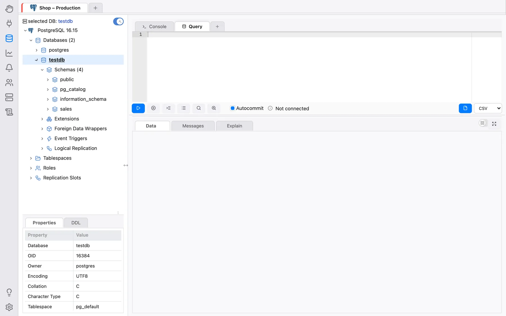
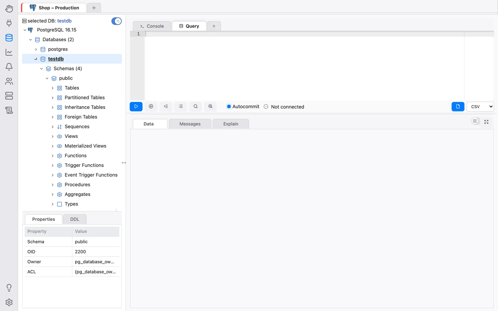
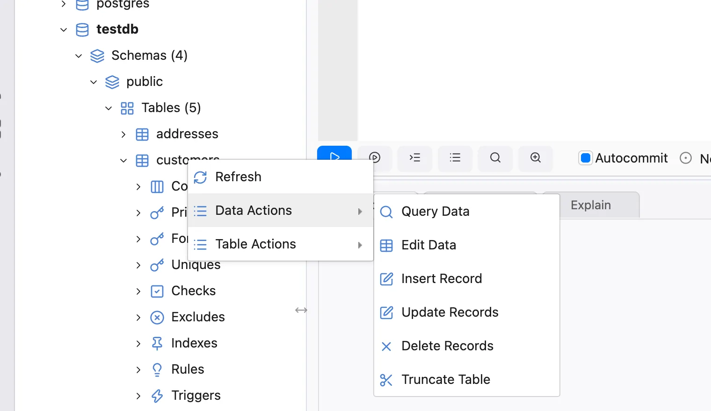
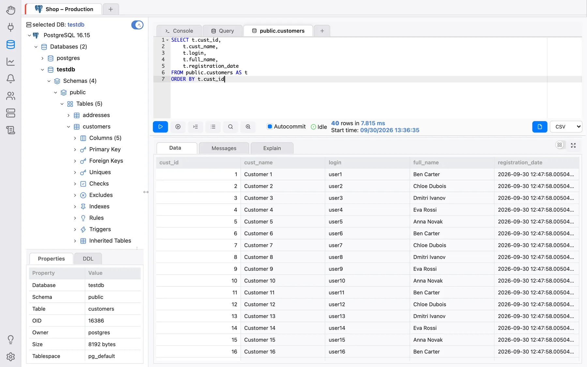

Gérer les bases de données
Après avoir créé une connexion, vous pouvez l’ouvrir en cliquant sur Connecter dans la section Connexions, ou en double-cliquant dessus dans la liste des connexions. OmniDB bascule alors vers la section Base de données et ouvre la connexion dans un nouvel onglet de connexion.
Sections de l’espace de travail
La barre d’icônes du bord gauche de la fenêtre permet de passer d’une section de l’espace de travail à l’autre :
- Bienvenue : la page de démarrage, avec des liens vers la documentation et le tutoriel Prise en main (voir Fonctionnalités supplémentaires) ;
- Connexions : l’endroit où les connexions sont créées, organisées et ouvertes (voir Créer des utilisateurs et des connexions) ;
- Base de données : les onglets de connexion ouverts, chacun avec son arborescence de base de données et ses onglets Requête et Console — décrits dans ce chapitre ;
- Supervision, Notifications, Autorisations et Utilisateurs connectés : des outils qui agissent sur les connexions ouvertes dans la section Base de données (voir Tableau de bord de supervision, Notifications, Rôles et autorisations et Utilisateurs connectés) ;
- Extraits : vos morceaux de SQL enregistrés (voir Extraits) ;
- en bas, Prise en main (le tutoriel interactif), Compte (version serveur uniquement : l’utilisateur actuel, la version et Déconnexion) et Paramètres (voir Paramètres et langues ; les superutilisateurs y trouvent aussi Gérer les utilisateurs).
Les sections Base de données, Supervision, Notifications, Autorisations et Utilisateurs connectés affichent toutes la même bande d’onglets de connexion ouverts en haut, avec la même sélection : sélectionnez une connexion dans l’une d’elles et les autres suivent. Changer de section ne ferme jamais une connexion.
Onglets de connexion
Chaque connexion ouverte est un onglet de cette bande, portant le nom de la connexion. Une connexion marquée d’un environnement (Production, UAT, Development, Archive) affiche la couleur de cet environnement sur son onglet, ce qui permet de distinguer facilement une connexion de production. Le survol d’un onglet affiche ses détails (serveur, ou chaîne de connexion) et fait apparaître son bouton de fermeture (×). Les onglets peuvent être réordonnés par glisser-déposer.
Le + à la fin de la bande ouvre une autre connexion : il liste vos connexions enregistrées (regroupées, si vous utilisez des groupes) et, sous Consoles SSH, vos connexions de terminal. Fermer un onglet de connexion met fin à ses sessions de base de données.
Dans un onglet de connexion, vous trouvez :
- L’arborescence de la base de données à gauche, dans laquelle vous naviguez parmi les objets de la base de données. Un clic droit sur un nœud affiche ce que vous pouvez en faire.
- Les panneaux Propriétés et DDL sous l’arborescence, qui affichent les propriétés et
l’instruction
CREATEdu nœud sélectionné dans l’arborescence. L’arborescence et ce panneau peuvent être redimensionnés en faisant glisser leurs séparateurs, et repliés avec les petits boutons de bascule qui s’y trouvent. - Les onglets internes à droite. Le + à la fin de la bande des onglets internes ajoute un Onglet de requête ou un Onglet de console ; d’autres actions (comme Modifier les données sur une table) ouvrent leurs propres onglets internes.
Un onglet Requête contient un éditeur SQL avec coloration syntaxique, autocomplétion et rechercher et remplacer, une barre d’outils (Exécuter, Exécuter l’instruction au curseur, Indenter le SQL, Historique des commandes, Explain, Explain Analyze, Validation automatique, Exporter les données, …) et, en dessous, la zone de résultats avec les sous-onglets Données, Messages et Explain. Voir Écrire des requêtes SQL pour les détails.
Travailler avec des bases de données
Développez le nœud racine de l’arborescence (qui porte le nom du moteur de base de données). La première fois que vous utilisez une connexion dont le mot de passe n’est pas enregistré, OmniDB vous le demande. Un mot de passe saisi dans cette invite est mémorisé pendant 30 minutes pour votre session ; ensuite, l’invite réapparaît. Une fois le mot de passe correct saisi, le nœud racine affiche la version du serveur et se développe, montrant la connexion à la base de données actuelle ainsi que les éléments de niveau instance — pour PostgreSQL : Bases de données, Tablespaces, Rôles et Slots de réplication.
Vous pouvez vous connecter à une seule base de données PostgreSQL et, avec la même connexion, vous connecter à d’autres bases de données de la même instance PostgreSQL. Pour changer, développez le nœud d’une autre base de données : OmniDB vous demande si vous voulez vraiment changer de base de données active et, sur Oui, en fait la base de données active de cet onglet de connexion.
Allez-y et développez le nœud Schémas. Vous verrez tous les schémas de la base de données
actuelle (dans le cas de PostgreSQL, les schémas TOAST et temporaires ne sont pas affichés).

Cliquez maintenant pour développer le schéma public. Vous verrez différents types d’éléments
contenus dans ce schéma.

Cliquez maintenant pour développer le nœud Tables, et vous verrez toutes les tables contenues dans le
schéma public. Développez n’importe quelle table et vous verrez ses colonnes, sa clé primaire, ses
clés étrangères, ses contraintes, ses index, ses règles, ses déclencheurs et ses partitions.

Pour visualiser les enregistrements d’une table, faites un clic droit dessus et choisissez Actions sur les données > Interroger les données.

Remarquez qu’OmniDB ouvre un nouvel éditeur SQL avec une requête simple pour lister les enregistrements de la table. Les enregistrements s’affichent dans une grille juste en dessous de l’éditeur. Cette grille peut être contrôlée au clavier, comme dans un tableur. Vous pouvez également copier des données d’une seule cellule ou d’un bloc de cellules (sélectionnable au clavier ou à la souris) et les coller dans n’importe quel tableur.

Vous pouvez modifier la requête dans l’éditeur SQL, en écrivant des requêtes simples ou plus complexes. Pour
l’exécuter, cliquez sur le bouton Exécuter ou appuyez sur Alt-Q
(Ctrl-Q sur macOS). Si le résultat comporte plus de lignes que le premier lot récupéré, les
boutons Récupérer plus et Tout récupérer apparaissent. Plus de détails dans les chapitres suivants.
Travailler avec plusieurs onglets au sein d’une même connexion
À l’intérieur d’une même connexion, vous pouvez créer plusieurs onglets internes en cliquant sur le + à la fin de la bande des onglets internes, puis en choisissant Onglet de requête (ou Onglet de console).
Dans OmniDB, vous pouvez exécuter plusieurs instructions et procédures SQL en parallèle. Chaque onglet Requête dispose de sa propre session de base de données. Pendant qu’un onglet s’exécute, un indicateur de chargement y est affiché ; lorsqu’un onglet que vous ne regardez pas se termine, il affiche une coche à la place. Le bouton rouge Annuler annule l’instruction en cours d’exécution dans l’onglet actuel.
Vous pouvez également glisser-déposer un onglet pour modifier son ordre. Cela fonctionne aussi bien pour les onglets internes que pour les onglets de connexion. Lorsqu’une rangée d’onglets manque de place, les onglets rétrécissent progressivement jusqu’à n’afficher qu’une icône ; le survol d’un onglet réduit à son icône affiche son nom.
De plus, vous pouvez utiliser des raccourcis clavier pour gérer les onglets internes. Voici les raccourcis par défaut sous Windows/Linux (macOS utilise Ctrl au lieu d’Alt) ; ils peuvent tous être modifiés sous Paramètres > Raccourcis :
- Alt-I : insérer un nouvel onglet interne
- Alt-Shift-Q : supprime l’onglet interne courant
- Alt-O : déplace le focus vers l’onglet interne à gauche
- Alt-P : déplace le focus vers l’onglet interne à droite
Il n’existe aucun raccourci clavier pour les onglets de connexion — utilisez la souris ou le glisser-déposer pour ceux-ci. (Le menu Affichage de l’application de bureau propose des raccourcis pour changer de section ; voir Application de bureau.)
Tous les onglets Requête sont enregistrés automatiquement chaque fois que vous les exécutez. Même si vous fermez la fenêtre d’OmniDB ou l’onglet du navigateur, ils sont stockés dans la base de données utilisateur d’OmniDB et restaurés à la prochaine ouverture d’OmniDB (dans l’application de bureau) ou à votre prochaine connexion (dans la version serveur) — OmniDB démarre alors dans la section Base de données avec ces connexions ouvertes. Fermer vous-même un onglet de connexion ou un onglet interne le supprime définitivement, il ne sera donc pas restauré.